Exploring usage of the word “obese”
There is interest in exploring statistics around the use of the word “obese” around the following research questions:
- Do tabloids use “obese” more than broadsheets?
- Or do broadsheets use “obese” more than tabloids?
- Or is there no discernible pattern of use?
- Is there any newspaper that uses obese more than others?
- Any year where obese is the most frequent/least frequent?
Additional question:
- Is there a difference of use by primary topic?
Executive summary
- Tabloids use the word “obese” more frequently than broadsheets.
- More specifically, a Welch Two Sample t-test testing the difference between the frequency in broadsheets per 1000 words and frequency in tabloids (mean of broadsheets = 3.16, mean of tabloids = 5.59) suggests that the effect is negative, statistically significant, and small (difference = -2.43, 95% CI [-2.63, -2.23], t(10062.88) = -24.01, p < .001; Cohen’s d = -0.46, 95% CI [-0.50, -0.42]).
- Tabloids have shorter article lengths than broadsheets.
- More specifically, using a Welch Two Sample t-test comparing the mean word count of articles from broadsheets and tabloids (mean of broadsheet = 778.84, mean of tabloid = 485.42) suggests that the effect is positive, statistically significant, and medium (difference = 293.42, 95% CI [273.82, 313.02], t(7348.69) = 29.34, p < .001; Cohen’s d = 0.60, 95% CI [0.56, 0.65])
Investigating the data by source and year revealed that these variables explained a small amount of variance in the data, with the word obese being used less frequently in the Age, Australian, Canberra Times and Sydney Morning Herald relative to the Advertiser, while in the Hobart Mercury and Northern Territorian it was used somewhat more frequently than in the Advertiser. Use of the word “obese” decreased with time in the corpus.
Significant differences in the use of “obese” were observed in articles on different topics, with articles annotated as “Awards” and “Biomedical Research” using more instances per 1000 words than articles discussing politics, schooling, transport and commuting.
Significant differences in article topics were also observed between tabloids and broadsheets, with the topics “ChildrenParents”, “NutritionStudy”, “WomenPregnancy” and “FitnessExercise” approximately 3x more frequently reported on in tabloids than broadsheets, in contrast to topics like “Politics” and “SportsDoping”, which were approximately evenly represented between the two media types.
Data source
CQPweb data was provided. To calculate normalised frequency, we divide the number of observations from CQPweb by the word count as calculated in Python, and multiple by 1000.
Code
assess_year_source <- function(df){
df %>%
dplyr::select(source, year) %>%
group_by(year, source) %>%
count(year) %>%
rename(count = n) %>%
pivot_wider(id_cols = c(source), names_from = year, values_from = c(count), values_fill = 0) %>%
janitor::adorn_totals(c("row", "col")) %>%
kable()
}
read_cqpweb <- function(filename){
read.csv(
here("100_data_raw", filename),
skip = 3, sep = "\t") %>%
janitor::clean_names()
}Code
adj_obese <- read_cqpweb("aoc_all_obese_tagadjlemma.txt")
metadata <- read_csv(here("100_data_raw", "corpus_cqpweb_metadata.csv"))
additional_source_metadata <- read_csv(here("100_data_raw", "addition_source_metadata.csv"))
topic_labels <- read_csv(here("100_data_raw", "topic_labels.csv"))
metadata_full <- inner_join(inner_join(metadata,
topic_labels,
by = c("dominant_topic" = "topic_number")),
additional_source_metadata)
obese_annotated <- inner_join(
adj_obese, metadata_full, by = c("text" = "article_id")) %>%
mutate(frequency = 10^3*no_hits_in_text/wordcount_total) Tabloid vs broadsheet
What is the distribution of obese in articles?
Code
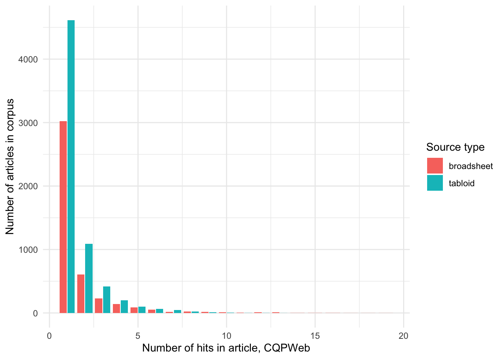
How is this usage distributed by year (number of articles in corpus)?
Code
| source | 2008 | 2009 | 2010 | 2011 | 2012 | 2013 | 2014 | 2015 | 2016 | 2017 | 2018 | 2019 | Total |
|---|---|---|---|---|---|---|---|---|---|---|---|---|---|
| Advertiser | 130 | 144 | 115 | 127 | 125 | 158 | 122 | 127 | 100 | 96 | 77 | 75 | 1396 |
| Age | 140 | 85 | 107 | 85 | 102 | 94 | 88 | 135 | 93 | 90 | 63 | 44 | 1126 |
| Australian | 115 | 84 | 68 | 76 | 58 | 47 | 61 | 33 | 35 | 34 | 62 | 36 | 709 |
| CanTimes | 71 | 85 | 70 | 79 | 72 | 88 | 98 | 88 | 54 | 77 | 65 | 26 | 873 |
| CourierMail | 167 | 144 | 125 | 110 | 97 | 118 | 122 | 108 | 100 | 85 | 118 | 74 | 1368 |
| HeraldSun | 196 | 201 | 171 | 183 | 138 | 157 | 121 | 95 | 84 | 89 | 95 | 75 | 1605 |
| HobMercury | 75 | 59 | 56 | 57 | 60 | 63 | 27 | 33 | 32 | 32 | 43 | 38 | 575 |
| NorthernT | 49 | 54 | 45 | 30 | 33 | 31 | 27 | 30 | 18 | 20 | 22 | 12 | 371 |
| SydHerald | 158 | 126 | 129 | 130 | 130 | 124 | 101 | 142 | 105 | 110 | 98 | 81 | 1434 |
| WestAus | 114 | 96 | 90 | 98 | 95 | 77 | 83 | 44 | 53 | 27 | 16 | 6 | 799 |
| BrisTimes | 0 | 0 | 0 | 0 | 0 | 1 | 9 | 37 | 5 | 7 | 19 | 22 | 100 |
| Telegraph | 0 | 0 | 0 | 0 | 0 | 0 | 93 | 52 | 86 | 95 | 79 | 60 | 465 |
| Total | 1215 | 1078 | 976 | 975 | 910 | 958 | 952 | 924 | 765 | 762 | 757 | 549 | 10821 |
We can see that apart from the Brisbane times and Daily Telegraph, there are articles using “obese” every year and in every publication. We will filter out these two sources.
How is the frequency (per thousand words) of the usage of obese distributed by tabloids/broadsheets?
Code
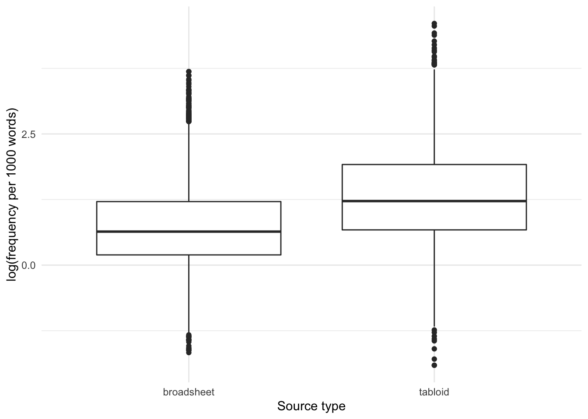
And let’s also use a histogram to look at the distribution:
Code
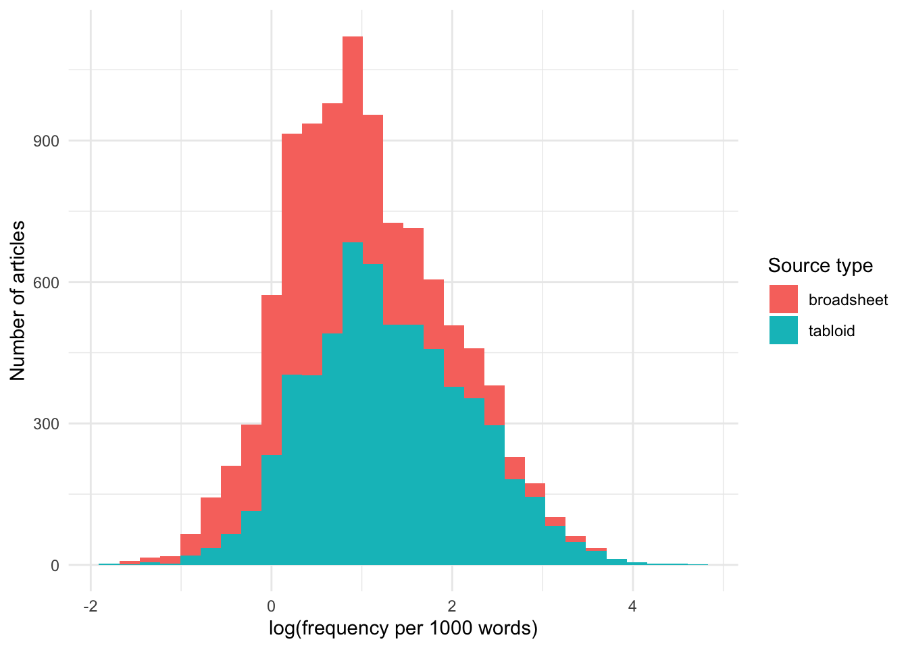
Note that broadsheets have somewhat longer texts than tabloids:
Code
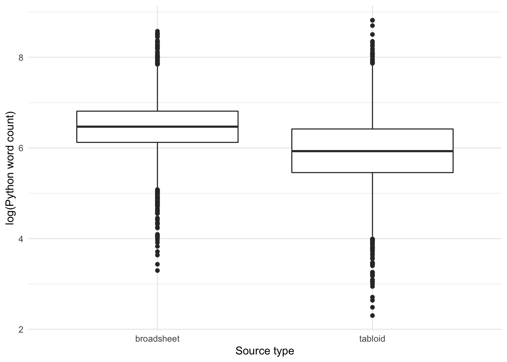
Let’s use a histogram to look at the distribution in more detail:
Code
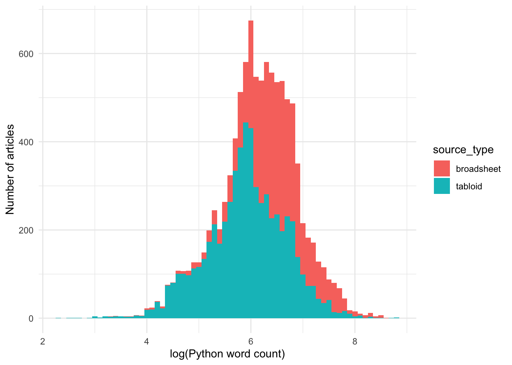
The log-transformed word count data is approximately normally distributed.
Let’s see if the difference in length of articles using the word “obese” in tabloids and broadsheets is significant?
Code
The Welch Two Sample t-test testing the difference between wordcount_broadsheet and wordcount_tabloid (mean of x = 778.84, mean of y = 485.42) suggests that the effect is positive, statistically significant, and medium (difference = 293.42, 95% CI [273.82, 313.02], t(7348.69) = 29.34, p < .001; Cohen’s d = 0.60, 95% CI [0.56, 0.65])
Yes, overall articles in tabloids are significantly shorter than in broadsheets.
If we then test the difference between the frequency of the word “obese” in tabloids and broadsheets, we can see that a higher frequency per 1000 words is detected for usage of the word “obese” in tabloids than broadsheets.
Code
The Welch Two Sample t-test testing the difference between frequency_broadsheet and frequency_tabloid (mean of x = 3.16, mean of y = 5.59) suggests that the effect is negative, statistically significant, and small (difference = -2.43, 95% CI [-2.63, -2.23], t(10062.88) = -24.01, p < .001; Cohen’s d = -0.46, 95% CI [-0.50, -0.42])
So, yes, the frequency of use of the word “obese” is lower in broadsheets than in tabloids.
Let’s use bootstrapping to see if the raw frequencies of usage of the word obese are different?
Code
broadsheet_counts <- NULL
tabloid_counts <- NULL
for (i in 1:10000) {
x <- mean(sample({obese_annotated_filtered %>%
filter(source_type == "broadsheet") %>%
pull(no_hits_in_text)}, 1000, replace = FALSE))
y <- mean(sample({obese_annotated_filtered %>%
filter(source_type == "tabloid") %>%
pull(no_hits_in_text)}, 1000, replace = FALSE))
broadsheet_counts <- c(broadsheet_counts, x)
tabloid_counts <- c(tabloid_counts, y)
}
counts_comparison <- data.frame(
mean_sample = c(broadsheet_counts, tabloid_counts),
source_type = c(
rep("broadsheet", length(broadsheet_counts)),
rep("tabloid", length(tabloid_counts))))
counts_comparison %>%
ggplot(aes(x = mean_sample, fill = source_type)) +
geom_histogram()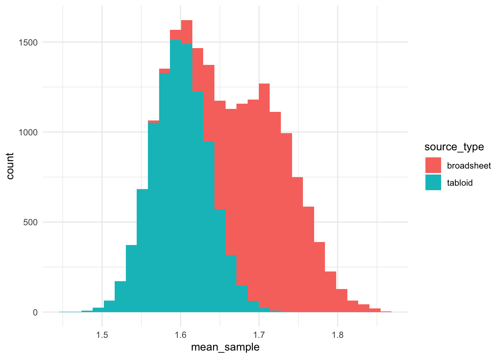
It is interesting that the distribution of usage of “obese” is ~1.6 uses per article in tabloid publications, while the distribution for broadsheets was bimodal.
The Welch Two Sample t-test testing the difference between broadsheet_counts and tabloid_counts (mean of x = 1.71, mean of y = 1.60) suggests that the effect is positive, statistically significant, and large (difference = 0.11, 95% CI [0.11, 0.11], t(18721.64) = 182.01, p < .001; Cohen’s d = 2.57, 95% CI [2.83, 2.83])
Let’s look at the trend over time:
Code
obese_annotated_filtered %>%
ggplot(aes(x = as.factor(year),
y = log(frequency),
fill = year)) +
geom_jitter(alpha = 0.2) +
geom_smooth(aes(group = source_type), col = "blue", method = "loess") +
geom_hline(yintercept = 1, col = "red", lty = 3, size = 3) +
facet_wrap(~source_type) +
theme(axis.text.x =
element_text(angle = 90, vjust = 0.5, hjust=1),
legend.position = "NA") +
labs(
x = "Year",
y = "log(frequency per 1000 words)"
)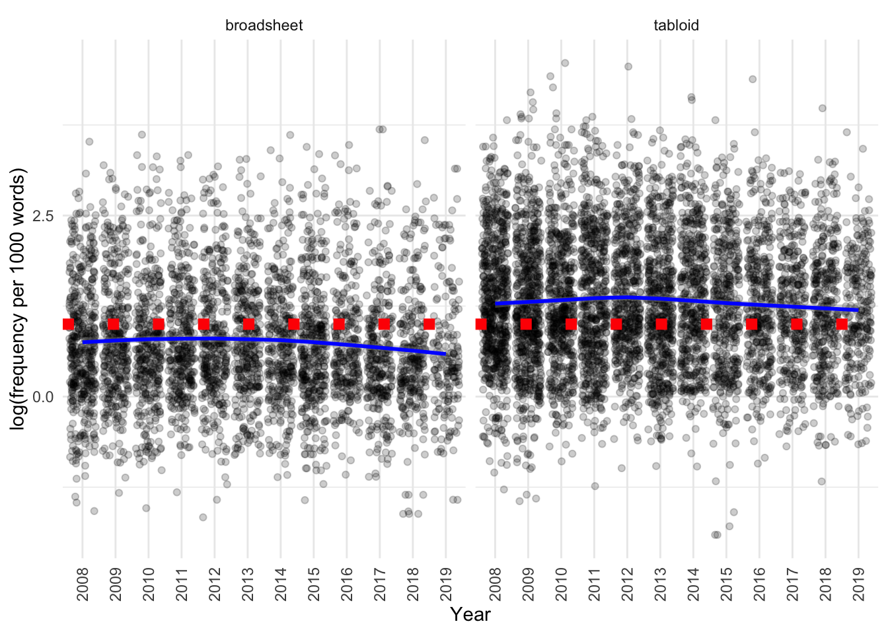
We can see that there is a difference:
- between tabloids and broadsheets, as characterised above
- usage subtly decreases in both over time
Differences in usage by source
Is there a difference in the usage of obese by source?
Code
obese_annotated_filtered %>%
ggplot(aes(x = reorder(source,frequency),
y = log(frequency),
fill = source_type)) +
geom_boxplot() +
theme(axis.text.x =
element_text(angle = 90, vjust = 0.5, hjust=1),
legend.position = "NA")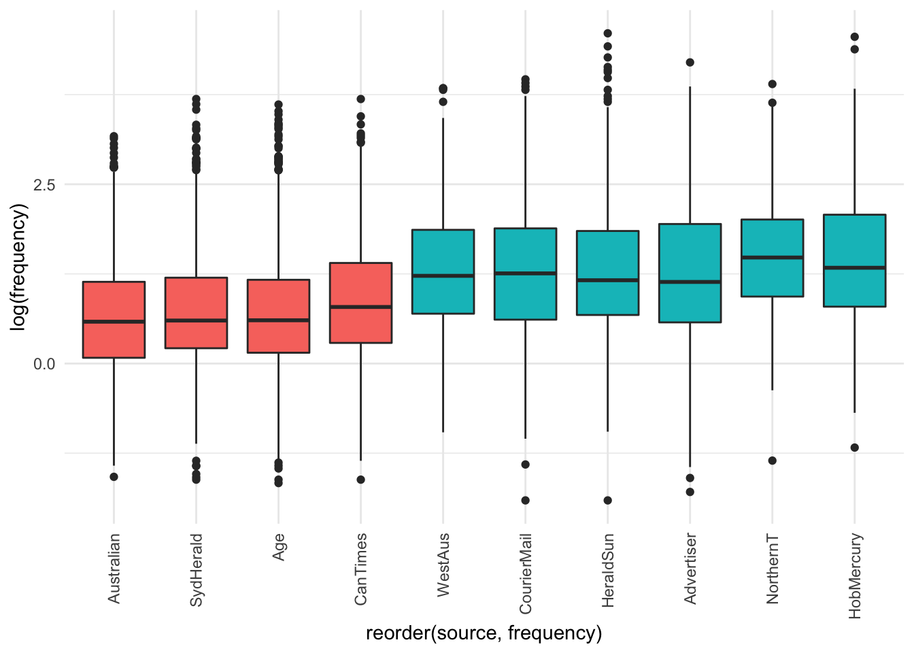
The visualisation suggests there are not - only the differences observed above for tabloids vs broadsheets.
What are the means and standard deviations of the frequency by source?
Code
| source | mean | median | sd | type |
|---|---|---|---|---|
| Australian | 2.817048 | 1.792115 | 3.175300 | broadsheet |
| SydHerald | 3.072108 | 1.821494 | 3.657049 | broadsheet |
| Age | 3.154595 | 1.828154 | 4.060922 | broadsheet |
| CanTimes | 3.569830 | 2.200220 | 4.025436 | broadsheet |
| WestAus | 5.292246 | 3.397508 | 5.496833 | tabloid |
| CourierMail | 5.351845 | 3.514949 | 5.800857 | tabloid |
| HeraldSun | 5.493390 | 3.194888 | 6.965477 | tabloid |
| Advertiser | 5.565510 | 3.120132 | 6.236993 | tabloid |
| NorthernT | 6.251933 | 4.385965 | 6.097086 | tabloid |
| HobMercury | 6.464202 | 3.802281 | 8.143909 | tabloid |
It seems that within the different sources among broadsheets and tabloids there is not much difference among the frequency of use of the word “obese”.
Differences in usage by year
Is there any year when “obese” is used more frequently than others?
Code
obese_annotated_filtered %>%
ggplot(aes(x = reorder(year,frequency),
y = log(frequency),
fill = year)) +
geom_boxplot() +
theme(axis.text.x =
element_text(angle = 90, vjust = 0.5, hjust=1),
legend.position = "NA")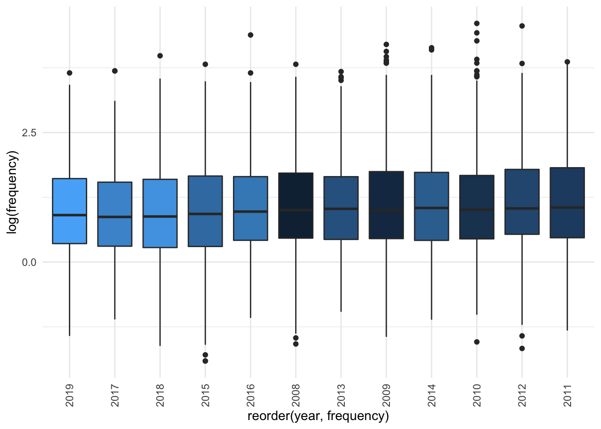
Based on the visualisation it seems not. If we separate out by source there also doesn’t seem to be much difference. If we use a jitter plot to visualise the data, then fit a smoothing line and compare with the line of “no change” (dashed red line), we can see that there really isn’t a very strong difference by source and year:
Code
obese_annotated_filtered %>%
ggplot(aes(x = as.factor(year),
y = log(frequency),
fill = year)) +
geom_jitter(alpha = 0.2) +
geom_smooth(aes(group = source), col = "blue", method = "loess") +
geom_hline(yintercept = 1, col = "red", lty = 3, size = 3) +
facet_wrap(~source) +
theme(axis.text.x =
element_text(angle = 90, vjust = 0.5, hjust=1),
legend.position = "NA") +
labs(
x = "Year",
y = "log(frequency per 1000 words)"
)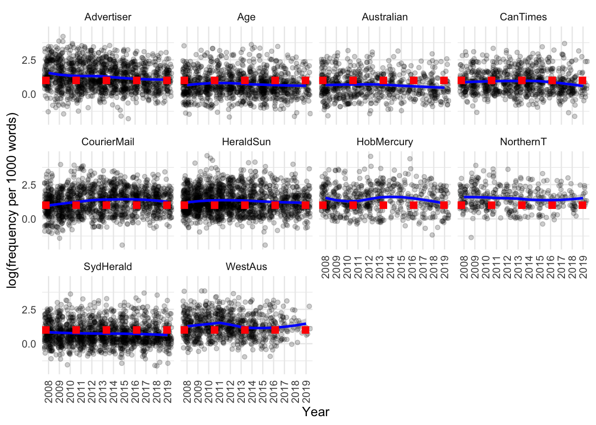
The distributions each year also look quite similar:
Code
obese_annotated_filtered %>%
ggplot(aes(x = reorder(year,frequency),
y = log(frequency),
fill = year)) +
geom_violin() +
theme(axis.text.x =
element_text(angle = 90, vjust = 0.5, hjust=1),
legend.position = "NA")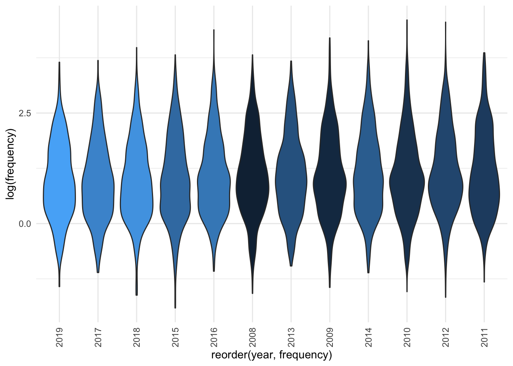
Code
| year | mean | median | sd |
|---|---|---|---|
| 2019 | 3.817842 | 2.475248 | 3.971667 |
| 2017 | 3.866365 | 2.389490 | 4.300584 |
| 2018 | 3.966531 | 2.409639 | 4.616181 |
| 2015 | 4.335848 | 2.531646 | 4.950555 |
| 2016 | 4.471581 | 2.649011 | 5.673864 |
| 2008 | 4.512463 | 2.732240 | 4.882211 |
| 2013 | 4.581882 | 2.793296 | 5.057143 |
| 2009 | 4.801149 | 2.706365 | 6.176861 |
| 2014 | 4.926691 | 2.840909 | 6.018102 |
| 2010 | 4.938758 | 2.743489 | 7.376403 |
| 2012 | 5.065254 | 2.816924 | 6.234889 |
| 2011 | 5.128600 | 2.865330 | 6.218089 |
Differences in usage by source type, source and year
We can also try to simultaneously model differences by source type, source and year.
As expected, a model that includes the source type (tabloid vs broadsheet) gives a better fit than one that does not:
Code
obese_annotated_filtered$scaled_year <- scale(
obese_annotated_filtered$year, scale = F)
library(lme4)
# base model
m_0_base <- lm(log(frequency) ~ 1,
data = obese_annotated_filtered)
# with source type
m_0_sourcetype <- lm(log(frequency) ~ source_type,
data = obese_annotated_filtered)
# with year
m_0_year <- lm(log(frequency) ~ scaled_year,
data = obese_annotated_filtered)
# with source
m_0_source <- lm(log(frequency) ~ source,
data = obese_annotated_filtered)
# with source and year
# with source
m_0_sourceyear <- lm(log(frequency) ~ source + scaled_year,
data = obese_annotated_filtered)
# compare
rbind({broom::glance(m_0_base) %>%
dplyr::select(-df.residual,- deviance, -nobs) %>%
mutate(model = "1")},
{broom::glance(m_0_sourcetype)%>%
dplyr::select(-df.residual,- deviance, -nobs) %>%
mutate(model = "source_type")},
{broom::glance(m_0_year) %>%
dplyr::select(-df.residual,- deviance, -nobs) %>%
mutate(model = "scaled_year")},
{broom::glance(m_0_source) %>%
dplyr::select(-df.residual,- deviance, -nobs) %>%
mutate(model = "source")},
{broom::glance(m_0_sourceyear) %>%
dplyr::select(-df.residual,- deviance, -nobs) %>%
mutate(model = "sourceyear")}
) %>%
dplyr::select(model, everything()) %>%
arrange(AIC) %>%
kable()| model | r.squared | adj.r.squared | sigma | statistic | p.value | df | logLik | AIC | BIC |
|---|---|---|---|---|---|---|---|---|---|
| sourceyear | 0.0965926 | 0.0957108 | 0.8690119 | 109.53982 | 0e+00 | 10 | -13107.20 | 26238.41 | 26325.24 |
| source | 0.0952110 | 0.0944163 | 0.8696337 | 119.79863 | 0e+00 | 9 | -13115.04 | 26252.08 | 26331.67 |
| source_type | 0.0891430 | 0.0890541 | 0.8722045 | 1003.52945 | 0e+00 | 1 | -13149.32 | 26304.63 | 26326.34 |
| scaled_year | 0.0026045 | 0.0025072 | 0.9126977 | 26.77577 | 2e-07 | 1 | -13614.74 | 27235.48 | 27257.19 |
| 1 | 0.0000000 | 0.0000000 | 0.9138440 | NA | NA | NA | -13628.12 | 27260.23 | 27274.70 |
We can see that the model incorporating source and year provides the best fit for the data, explaining somewhat more variability than that which includes only source type.
Code
anova(m_0_sourcetype, m_0_sourceyear)Analysis of Variance Table
Model 1: log(frequency) ~ source_type
Model 2: log(frequency) ~ source + scaled_year
Res.Df RSS Df Sum of Sq F Pr(>F)
1 10254 7800.6
2 10245 7736.8 9 63.799 9.3868 2.396e-14 ***
---
Signif. codes: 0 '***' 0.001 '**' 0.01 '*' 0.05 '.' 0.1 ' ' 1Next, let’s compare if having a distinct intercept for each source improves the fit of the model.
Code
m_1_source <- lmer(log(frequency) ~ 1 + (1|source),
data = obese_annotated_filtered, REML = T)
m_1_sourceyear <- lmer(log(frequency) ~ scaled_year + (1|source),
data = obese_annotated_filtered, REML = T)
m_1_sourceyear2 <- lmer(log(frequency) ~ scaled_year + (scaled_year|source),
data = obese_annotated_filtered, REML = T)
m_1_sourceyeartype <- lmer(log(frequency) ~ scaled_year + source_type + (1|source),
data = obese_annotated_filtered, REML = T)
m_1_sourceyeartype2 <- lmer(log(frequency) ~ scaled_year + source_type + (scaled_year|source),
data = obese_annotated_filtered, REML = T)
rbind(
{broom::glance(m_0_sourceyear)%>%
dplyr::select(AIC, BIC, logLik) %>%
mutate(model = "scaled_year + source")},
{broom.mixed::glance(m_1_source) %>%
dplyr::select(AIC, BIC, logLik) %>%
mutate(model = "1 + (1/source)")},
{broom.mixed::glance(m_1_sourceyear)%>%
dplyr::select(AIC, BIC, logLik) %>%
mutate(model = "scaled_year + 1/source")},
{broom.mixed::glance(m_1_sourceyeartype)%>%
dplyr::select(AIC, BIC, logLik) %>%
mutate(model = "scaled_year + source_type + 1/source")},
{broom.mixed::glance(m_1_sourceyear2)%>%
dplyr::select(AIC, BIC, logLik) %>%
mutate(model = "scaled_year + scaled_year/source")},
{broom.mixed::glance(m_1_sourceyeartype2)%>%
dplyr::select(AIC, BIC, logLik) %>%
mutate(model = "scaled_year + source_type + scaled_year/source")}
) %>%
arrange(AIC) %>%
kable()| AIC | BIC | logLik | model |
|---|---|---|---|
| 26238.41 | 26325.24 | -13107.20 | scaled_year + source |
| 26239.73 | 26290.38 | -13112.86 | scaled_year + source_type + scaled_year/source |
| 26256.38 | 26299.79 | -13122.19 | scaled_year + scaled_year/source |
| 26275.94 | 26312.12 | -13132.97 | scaled_year + source_type + 1/source |
| 26292.53 | 26321.47 | -13142.26 | scaled_year + 1/source |
| 26296.20 | 26317.91 | -13145.10 | 1 + (1/source) |
Including a distinct intercept for each source did not drastically improve the fit of the model (AIC increases, logLik decreases; BIC does decrease slightly, so based on this criteria it may be a slightly better fit).
Let’s plot the residuals for the fixed effects model:
Code
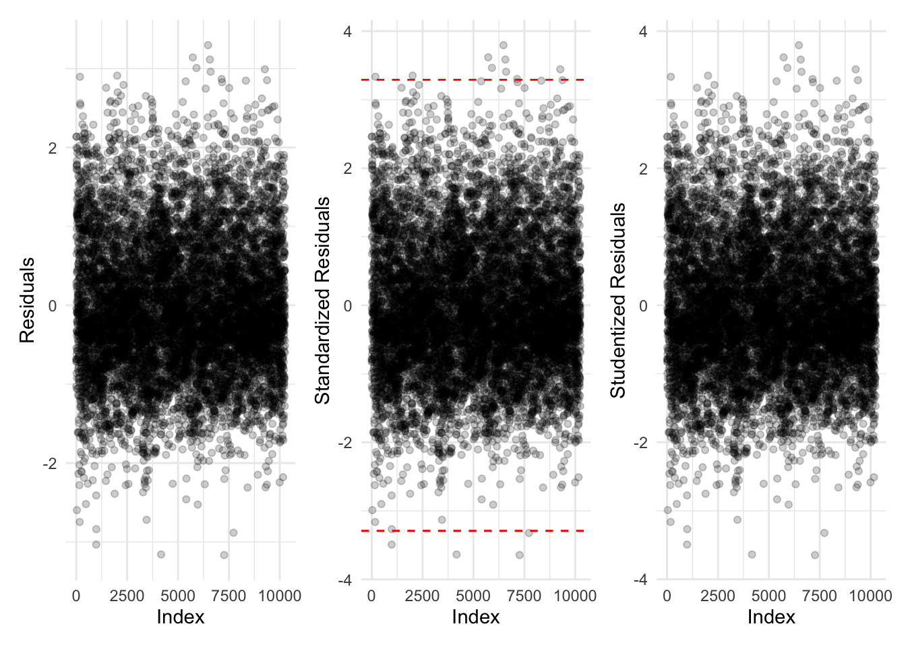
Proportion of data points with:
- abs(standardized residuals) > 3.29: 0.13%
- abs(standardized residuals) > 2.58: 1.02%
- abs(standardized residuals) > 1.96: 4.93%
All of these indicate the model is performing reasonably well on the data.
Let’s summarise the model (note that the intercept corresponds to the “first” source, i.e. the Advertiser):
Code
sjPlot::tab_model(m_0_sourceyear) | log(frequency) | |||
|---|---|---|---|
| Predictors | Estimates | CI | p |
| (Intercept) | 1.27 | 1.22 – 1.31 | <0.001 |
| source [Age] | -0.55 | -0.62 – -0.48 | <0.001 |
| source [Australian] | -0.63 | -0.71 – -0.55 | <0.001 |
| source [CanTimes] | -0.37 | -0.44 – -0.30 | <0.001 |
| source [CourierMail] | 0.01 | -0.06 – 0.07 | 0.816 |
| source [HeraldSun] | 0.02 | -0.05 – 0.08 | 0.628 |
| source [HobMercury] | 0.14 | 0.06 – 0.23 | 0.001 |
| source [NorthernT] | 0.23 | 0.13 – 0.33 | <0.001 |
| source [SydHerald] | -0.52 | -0.59 – -0.46 | <0.001 |
| source [WestAus] | 0.02 | -0.05 – 0.10 | 0.552 |
| scaled year | -0.01 | -0.02 – -0.01 | <0.001 |
| Observations | 10256 | ||
| R2 / R2 adjusted | 0.097 / 0.096 | ||
In summary, the fixed effects model which included source and year provided a good fit. Let’s summarise this model:
Code
report::report(m_0_sourceyear)We fitted a linear model (estimated using OLS) to predict frequency with source and scaled_year (formula: log(frequency) ~ source + scaled_year). The model explains a statistically significant and weak proportion of variance (R2 = 0.10, F(10, 10245) = 109.54, p < .001, adj. R2 = 0.10). The model’s intercept, corresponding to source = Advertiser and scaled_year = 0, is at 1.27 (95% CI [1.22, 1.31], t(10245) = 54.39, p < .001). Within this model:
- The effect of source [Age] is statistically significant and negative (beta = -0.55, 95% CI [-0.62, -0.48], t(10245) = -15.82, p < .001; Std. beta = -0.21, 95% CI [-0.23, -0.18])
- The effect of source [Australian] is statistically significant and negative (beta = -0.63, 95% CI [-0.71, -0.55], t(10245) = -15.68, p < .001; Std. beta = -0.23, 95% CI [-0.27, -0.20])
- The effect of source [CanTimes] is statistically significant and negative (beta = -0.37, 95% CI [-0.44, -0.30], t(10245) = -9.90, p < .001; Std. beta = -0.16, 95% CI [-0.19, -0.13])
- The effect of source [CourierMail] is statistically non-significant and positive (beta = 7.70e-03, 95% CI [-0.06, 0.07], t(10245) = 0.23, p = 0.816; Std. beta = -6.00e-03, 95% CI [-0.03, 0.02])
- The effect of source [HeraldSun] is statistically non-significant and positive (beta = 0.02, 95% CI [-0.05, 0.08], t(10245) = 0.48, p = 0.628; Std. beta = -8.24e-03, 95% CI [-0.03, 0.02])
- The effect of source [HobMercury] is statistically significant and positive (beta = 0.14, 95% CI [0.06, 0.23], t(10245) = 3.31, p < .001; Std. beta = 0.06, 95% CI [0.02, 0.09])
- The effect of source [NorthernT] is statistically significant and positive (beta = 0.23, 95% CI [0.13, 0.33], t(10245) = 4.44, p < .001; Std. beta = 0.07, 95% CI [0.03, 0.11])
- The effect of source [SydHerald] is statistically significant and negative (beta = -0.52, 95% CI [-0.59, -0.46], t(10245) = -16.02, p < .001; Std. beta = -0.21, 95% CI [-0.23, -0.18])
- The effect of source [WestAus] is statistically non-significant and positive (beta = 0.02, 95% CI [-0.05, 0.10], t(10245) = 0.59, p = 0.552; Std. beta = -0.01, 95% CI [-0.04, 0.02])
- The effect of scaled year is statistically significant and negative (beta = -0.01, 95% CI [-0.02, -5.16e-03], t(10245) = -3.96, p < .001; Std. beta = -0.02, 95% CI [-0.02, -8.05e-03])
Standardized parameters were obtained by fitting the model on a standardized version of the dataset. 95% Confidence Intervals (CIs) and p-values were computed using the Wald approximation.
To summarise, a model was fit by source and year, which explained a small amount of variance in the data. It showed that the Age, Australian, Canberra Times and Sydney Morning Herald had a lower frequency of use of the word “obese” relative to the Advertiser, while in the Hobart Mercury, Northern Territorian the word “obese” was used somewhat more frequently than in the Advertiser. Use of the word “obese” decreased with time in the corpus.
If we look at the mixed effects model scaled_year + source_type + scaled_year/source, which had the lowest BIC, we can see that the observation of higher frequency of counts in tabloids is reproduced, while the signal from the decrease by year is not detected:
Code
sjPlot::tab_model(m_1_sourceyeartype2)| log(frequency) | |||
|---|---|---|---|
| Predictors | Estimates | CI | p |
| (Intercept) | 0.75 | 0.65 – 0.84 | <0.001 |
| scaled year | -0.01 | -0.02 – 0.00 | 0.054 |
| source type [tabloid] | 0.58 | 0.46 – 0.70 | <0.001 |
| Random Effects | |||
| σ2 | 0.75 | ||
| τ00source | 0.01 | ||
| τ11source.scaled_year | 0.00 | ||
| ρ01source | -0.18 | ||
| ICC | 0.02 | ||
| N source | 10 | ||
| Observations | 10256 | ||
| Marginal R2 / Conditional R2 | 0.100 / 0.114 | ||
The intercepts and slopes for scaled year for each of the sources were:
| (Intercept) | scaled_year | source_typetabloid | |
|---|---|---|---|
| Australian | 0.6482964 | -0.0153703 | 0.5831533 |
| CourierMail | 0.6838377 | 0.0273333 | 0.5831533 |
| Advertiser | 0.6941022 | -0.0378463 | 0.5831533 |
| HeraldSun | 0.7009579 | -0.0077894 | 0.5831533 |
| WestAus | 0.7057935 | -0.0152603 | 0.5831533 |
| Age | 0.7172206 | -0.0107049 | 0.5831533 |
| SydHerald | 0.7434942 | -0.0139594 | 0.5831533 |
| HobMercury | 0.8135840 | -0.0111710 | 0.5831533 |
| NorthernT | 0.8725238 | -0.0212058 | 0.5831533 |
| CanTimes | 0.8825098 | -0.0163459 | 0.5831533 |
Differences in usage by topic
Code
| topic_label | broadsheet | tabloid | total_topic | prop_broadsheet |
|---|---|---|---|---|
| ChildrenParents | 364 | 1335 | 1699 | 21.42 |
| NutritionStudy | 642 | 1797 | 2439 | 26.32 |
| WomenPregnancy | 159 | 385 | 544 | 29.23 |
| FitnessExercise | 464 | 1093 | 1557 | 29.80 |
| BiomedResearch | 1013 | 2077 | 3090 | 32.78 |
| MedicalHealth | 297 | 524 | 821 | 36.18 |
| Food | 539 | 800 | 1339 | 40.25 |
| FastFood&Drinks | 1044 | 1441 | 2485 | 42.01 |
| Transport&Commuting | 427 | 559 | 986 | 43.31 |
| WomenGirls | 625 | 744 | 1369 | 45.65 |
| Awards | 28 | 33 | 61 | 45.90 |
| PublicHealthReport | 1243 | 1338 | 2581 | 48.16 |
| Students&Teachers | 536 | 572 | 1108 | 48.38 |
| Microbiome | 32 | 33 | 65 | 49.23 |
| SportsDoping | 260 | 253 | 513 | 50.68 |
| Politics | 1478 | 1249 | 2727 | 54.20 |
| MusicMovies | 1543 | 1236 | 2779 | 55.52 |
We can see that articles labelled with the topics “ChildrenParents”, “NutritionStudy”, “WomenPregnancy” and “FitnessExercise” are approximately 3x more frequently reported on in tabloids than broadsheets, in contrast to topics like “Politics” and “SportsDoping” which are approximately evenly represented between the two media types.
Code
obese_annotated_filtered %>%
ggplot(aes(x = as.factor(
reorder(topic_label,frequency)),
y = log(frequency),
fill = topic_label)) +
geom_boxplot() +
theme(axis.text.x =
element_text(angle = 90, vjust = 0.5, hjust=1),
legend.position = "NA") +
labs(x = "Topic label",
y = "log(frequency per 1000 words)")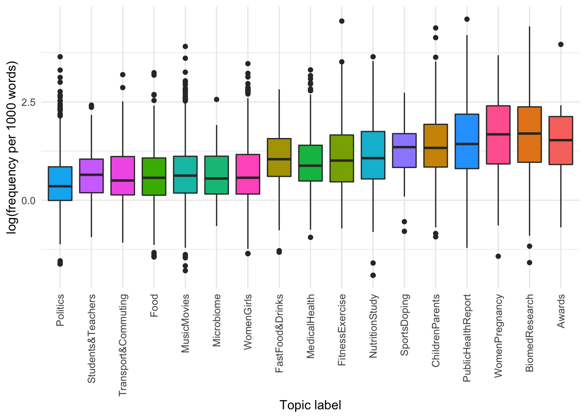
It seems there are some topics that use obese more than others.
We use a simple linear model with post-hoc comparisons and Bonferroni multiple testing correction:
Code
obese_by_topic <- lm(
frequency ~ as.factor(topic_label),
data = obese_annotated_filtered)
library(emmeans)
obese_by_topic_comp <- emmeans(obese_by_topic, pairwise ~ as.factor(topic_label), adjust = "bonferroni")
obese_by_topic_comp$contrasts %>%
summary(infer = TRUE) %>%
filter(p.value < 0.01) %>%
kable()| contrast | estimate | SE | df | lower.CL | upper.CL | t.ratio | p.value |
|---|---|---|---|---|---|---|---|
| Awards - Food | 5.942155 | 1.4853012 | 10239 | 0.6493259 | 11.2349838 | 4.000640 | 0.0086518 |
| Awards - Politics | 6.288435 | 1.4729512 | 10239 | 1.0396145 | 11.5372546 | 4.269276 | 0.0026911 |
| Awards - Students&Teachers | 6.172930 | 1.4968448 | 10239 | 0.8389660 | 11.5068943 | 4.123961 | 0.0051048 |
| Awards - Transport&Commuting | 5.942849 | 1.4971190 | 10239 | 0.6079082 | 11.2777906 | 3.969524 | 0.0098612 |
| BiomedResearch - ChildrenParents | 2.635277 | 0.2323342 | 10239 | 1.8073605 | 3.4631932 | 11.342613 | 0.0000000 |
| BiomedResearch - FastFood&Drinks | 4.493757 | 0.2333711 | 10239 | 3.6621454 | 5.3253683 | 19.255838 | 0.0000000 |
| BiomedResearch - FitnessExercise | 3.872260 | 0.2219288 | 10239 | 3.0814229 | 4.6630966 | 17.448211 | 0.0000000 |
| BiomedResearch - Food | 5.623753 | 0.2991564 | 10239 | 4.5577179 | 6.6897886 | 18.798706 | 0.0000000 |
| BiomedResearch - MedicalHealth | 4.461614 | 0.3299740 | 10239 | 3.2857608 | 5.6374669 | 13.521107 | 0.0000000 |
| BiomedResearch - Microbiome | 5.446934 | 1.1570708 | 10239 | 1.3237445 | 9.5701229 | 4.707520 | 0.0003455 |
| BiomedResearch - MusicMovies | 5.496256 | 0.1920506 | 10239 | 4.8118893 | 6.1806227 | 28.618798 | 0.0000000 |
| BiomedResearch - NutritionStudy | 3.717134 | 0.2237552 | 10239 | 2.9197880 | 4.5144790 | 16.612498 | 0.0000000 |
| BiomedResearch - Politics | 5.970033 | 0.2301306 | 10239 | 5.1499692 | 6.7900968 | 25.941938 | 0.0000000 |
| BiomedResearch - PublicHealthReport | 1.510443 | 0.2134401 | 10239 | 0.7498552 | 2.2710307 | 7.076659 | 0.0000000 |
| BiomedResearch - Students&Teachers | 5.854529 | 0.3520215 | 10239 | 4.6001098 | 7.1089473 | 16.631166 | 0.0000000 |
| BiomedResearch - Transport&Commuting | 5.624448 | 0.3531856 | 10239 | 4.3658810 | 6.8830145 | 15.924909 | 0.0000000 |
| BiomedResearch - WomenGirls | 5.197677 | 0.2446344 | 10239 | 4.3259286 | 6.0694243 | 21.246710 | 0.0000000 |
| ChildrenParents - FastFood&Drinks | 1.858480 | 0.2705723 | 10239 | 0.8943035 | 2.8226567 | 6.868701 | 0.0000000 |
| ChildrenParents - FitnessExercise | 1.236983 | 0.2607674 | 10239 | 0.3077457 | 2.1662201 | 4.743626 | 0.0002894 |
| ChildrenParents - Food | 2.988476 | 0.3290012 | 10239 | 1.8160898 | 4.1608630 | 9.083481 | 0.0000000 |
| ChildrenParents - MedicalHealth | 1.826337 | 0.3572536 | 10239 | 0.5532740 | 3.0994000 | 5.112159 | 0.0000441 |
| ChildrenParents - MusicMovies | 2.860979 | 0.2358616 | 10239 | 2.0204932 | 3.7014651 | 12.129909 | 0.0000000 |
| ChildrenParents - NutritionStudy | 1.081857 | 0.2623236 | 10239 | 0.1470739 | 2.0166394 | 4.124130 | 0.0051011 |
| ChildrenParents - Politics | 3.334756 | 0.2677823 | 10239 | 2.3805216 | 4.2889907 | 12.453238 | 0.0000000 |
| ChildrenParents - PublicHealthReport | -1.124834 | 0.2535822 | 10239 | -2.0284669 | -0.2212008 | -4.435776 | 0.0012607 |
| ChildrenParents - Students&Teachers | 3.219252 | 0.3777121 | 10239 | 1.8732854 | 4.5652181 | 8.523031 | 0.0000000 |
| ChildrenParents - Transport&Commuting | 2.989171 | 0.3787972 | 10239 | 1.6393379 | 4.3390039 | 7.891218 | 0.0000000 |
| ChildrenParents - WomenGirls | 2.562400 | 0.2803449 | 10239 | 1.5633986 | 3.5614007 | 9.140169 | 0.0000000 |
| ChildrenParents - WomenPregnancy | -2.125124 | 0.3656700 | 10239 | -3.4281787 | -0.8220691 | -5.811589 | 0.0000009 |
| FastFood&Drinks - MusicMovies | 1.002499 | 0.2368831 | 10239 | 0.1583730 | 1.8466252 | 4.232042 | 0.0031769 |
| FastFood&Drinks - Politics | 1.476276 | 0.2686824 | 10239 | 0.5188338 | 2.4337183 | 5.494502 | 0.0000055 |
| FastFood&Drinks - PublicHealthReport | -2.983314 | 0.2545326 | 10239 | -3.8903337 | -2.0762942 | -11.720753 | 0.0000000 |
| FastFood&Drinks - WomenPregnancy | -3.983604 | 0.3663297 | 10239 | -5.2890096 | -2.6781982 | -10.874367 | 0.0000000 |
| FitnessExercise - Food | 1.751494 | 0.3217375 | 10239 | 0.6049911 | 2.8979959 | 5.443859 | 0.0000073 |
| FitnessExercise - MusicMovies | 1.623996 | 0.2256189 | 10239 | 0.8200098 | 2.4279827 | 7.197963 | 0.0000000 |
| FitnessExercise - Politics | 2.097773 | 0.2588060 | 10239 | 1.1755254 | 3.0200210 | 8.105582 | 0.0000000 |
| FitnessExercise - PublicHealthReport | -2.361817 | 0.2440843 | 10239 | -3.2316042 | -1.4920294 | -9.676235 | 0.0000000 |
| FitnessExercise - Students&Teachers | 1.982269 | 0.3714022 | 10239 | 0.6587875 | 3.3057501 | 5.337256 | 0.0000131 |
| FitnessExercise - Transport&Commuting | 1.752188 | 0.3725057 | 10239 | 0.4247745 | 3.0796015 | 4.703789 | 0.0003519 |
| FitnessExercise - WomenGirls | 1.325417 | 0.2717838 | 10239 | 0.3569227 | 2.2939107 | 4.876731 | 0.0001489 |
| FitnessExercise - WomenPregnancy | -3.362107 | 0.3591487 | 10239 | -4.6419229 | -2.0822907 | -9.361323 | 0.0000000 |
| Food - NutritionStudy | -1.906620 | 0.3230001 | 10239 | -3.0576213 | -0.7556181 | -5.902846 | 0.0000005 |
| Food - PublicHealthReport | -4.113310 | 0.3159419 | 10239 | -5.2391605 | -2.9874601 | -13.019197 | 0.0000000 |
| Food - WomenPregnancy | -5.113600 | 0.4113757 | 10239 | -6.5795258 | -3.6476747 | -12.430488 | 0.0000000 |
| MedicalHealth - Politics | 1.508419 | 0.3558244 | 10239 | 0.2404489 | 2.7763894 | 4.239223 | 0.0030772 |
| MedicalHealth - PublicHealthReport | -2.951171 | 0.3452646 | 10239 | -4.1815114 | -1.7208304 | -8.547564 | 0.0000000 |
| MedicalHealth - WomenPregnancy | -3.951461 | 0.4343020 | 10239 | -5.4990839 | -2.4038379 | -9.098417 | 0.0000000 |
| Microbiome - WomenPregnancy | -4.936781 | 1.1910282 | 10239 | -9.1809762 | -0.6925853 | -4.144974 | 0.0046592 |
| MusicMovies - NutritionStudy | -1.779122 | 0.2274157 | 10239 | -2.5895120 | -0.9687330 | -7.823217 | 0.0000000 |
| MusicMovies - PublicHealthReport | -3.985813 | 0.2172744 | 10239 | -4.7600643 | -3.2115618 | -18.344603 | 0.0000000 |
| MusicMovies - WomenPregnancy | -4.986103 | 0.3414950 | 10239 | -6.2030107 | -3.7691954 | -14.600810 | 0.0000000 |
| NutritionStudy - Politics | 2.252899 | 0.2603739 | 10239 | 1.3250644 | 3.1807345 | 8.652555 | 0.0000000 |
| NutritionStudy - PublicHealthReport | -2.206691 | 0.2457462 | 10239 | -3.0824000 | -1.3309811 | -8.979553 | 0.0000000 |
| NutritionStudy - Students&Teachers | 2.137395 | 0.3724965 | 10239 | 0.8100143 | 3.4647759 | 5.738027 | 0.0000013 |
| NutritionStudy - Transport&Commuting | 1.907314 | 0.3735967 | 10239 | 0.5760128 | 3.2386157 | 5.105275 | 0.0000457 |
| NutritionStudy - WomenGirls | 1.480543 | 0.2732773 | 10239 | 0.5067270 | 2.4543590 | 5.417731 | 0.0000084 |
| NutritionStudy - WomenPregnancy | -3.206980 | 0.3602802 | 10239 | -4.4908287 | -1.9231323 | -8.901352 | 0.0000000 |
| Politics - PublicHealthReport | -4.459590 | 0.2515648 | 10239 | -5.3560340 | -3.5631460 | -17.727402 | 0.0000000 |
| Politics - WomenPregnancy | -5.459880 | 0.3642739 | 10239 | -6.7579598 | -4.1618003 | -14.988392 | 0.0000000 |
| PublicHealthReport - Students&Teachers | 4.344086 | 0.3663931 | 10239 | 3.0384541 | 5.6497171 | 11.856351 | 0.0000000 |
| PublicHealthReport - Transport&Commuting | 4.114005 | 0.3675116 | 10239 | 2.8043875 | 5.4236221 | 11.194217 | 0.0000000 |
| PublicHealthReport - WomenGirls | 3.687234 | 0.2648976 | 10239 | 2.7432783 | 4.6311888 | 13.919465 | 0.0000000 |
| Students&Teachers - WomenPregnancy | -5.344376 | 0.4512810 | 10239 | -6.9525027 | -3.7362485 | -11.842678 | 0.0000000 |
| Transport&Commuting - WomenPregnancy | -5.114295 | 0.4521896 | 10239 | -6.7256596 | -3.5029300 | -11.310067 | 0.0000000 |
| WomenGirls - WomenPregnancy | -4.687524 | 0.3736059 | 10239 | -6.0188577 | -3.3561893 | -12.546705 | 0.0000000 |
We can see that there are differences in the frequency of use of the word “obese” by topic, with articles annotated as “Awards” and “Biomedical Research” using more instances per 1000 words than articles discussing politics, schooling, transport and commuting.